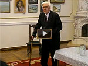
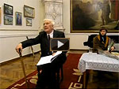

ТРОЯНОВ НИКОЛАЙ АЛЕКСЕЕВИЧ
(1921, с. Косицкое, Новгородской обл.), публицист, общественный деятель, актер, драматург, режиссер, Засл. артист Грузии (1957), горожанин 2000 г., Почетный гражданин г. Николаева, Почетный член Пушкинского клуба. После окончания средней школы окончил полковую школу в г. Шепетовка и стал офицером. Воевал под Киевом, Лениградом, в Польше, где был тяжело ранен. Награжден орденами Отечественной войны 1-й степени, Красной Звезды, 18 медалями, в том числе «За оборону Ленинграда», «За оборону Киева», «Ветеран труда». После войны с отличием окончил Театральное училище им. М.С. Щепкина при Малом театре в Москве(1950), ученик В. Пашенной, И. Ильинского, К. Зубова, Е. Турчаниновой и Н. Анненкова. В 1950-1960 гг. – актер Тбилисского русского театра им. А.С. Грибоедова, там же организовал самодеятельный театр. С 1960 г. – актер Русского драмтеатра им. В.П. Чкалова в Николаеве. В 1963 г. создает театральную студию, которой в 1969 г. присвоен статус Народного Драмтеатра при ДК строителей. За это время театром Троянова поставлено более 100 пьес. Пьесу А.П. Чехова «Предложение» в постановке Народного театра Н.А. Троянова можно посмотреть ЗДЕСЬ. Театральную школу Троянова прошло ок. 300 человек и некторые из них добились значительных успехов на профессиональной сцене. Им создано 20 пьес, издано три книги и опубликовано ок. 50 статей в газетах и журналах. Здесь представлены баллады Н.А. Троянова.

Представляем произведения
Николая Алексеевича:
ДВА БЛОНДИНА
Жили-были два блондина,
Два британских гражданина.
Вальтер Скотт и Роберт Бернс.
А вокруг был темный лес.
Вальтер был рожден на Темзе,
В ночь на пятницу, в пургу.
Он теперь в старинном замке...
Роберт жил на берегу.
Был он в общем добрый малый,
Но случались и грехи.
По ночам ловил он рыбу,
По утрам писал стихи.
Там же был отель «Каюта»,
В том отеле зал – «Лосось»…
Ровно в полночь в том приюте
Появился важный гость.
Был он празднично одет
В старый рыцарский колет.
Меч, проржавленный слегка,
Помнил средние века…
Автор многих сочинений,
Исторических замет,-
Вальтер был, конечно, гений,
Тут у нас сомнений нет.
Был он стар, сосредоточен,
Но, танцуя минуэт,
Был он очень, очень точен,-
Тут у нас сомнений нет.
В том же зале между прочим,
Был другой большой поэт.
Роберт Бернс – слуга и гость,
Меланхолик, рыцарь – гвоздь.
Он сидел, поджавши ноги,
Будто путник при дороге.
Тренькал он на мандолине,
Напевая «Жили-были…»
Вдруг он прыгнул на паркет,
И запел на весь отель.
«Шалтай-болтай висел на стене,
Шалтай-болтай свалился во сне.
Вся королевская челядь,
Вся королевская знать –
Не могут Шалтая, не могут Болтая,
Шалтая-Болтая, Болтая-Шалтая –
Собрать!..»
Две девицы прибегали,
Стол банкетный накрывали.
Прибегали, убегали,
И немного танцевали...
Вальтер Скотт, услышав песню,
Скажем так, слегка смутился,
Молча в кресло опустился,-
Был он в ярости, в огне.
- Роберт! Подойди ко мне!..
- Ваш покорнейший слуга…
- Что ты пел? Ответь сначала...
- Так, старинный анекдот.
- Как зовется сей сюжет?
- Песня старого капрала:
«У разбитого причала».
- Почему разбит причал?!
- Ваша милость, что случилось?
Лорд английский закричал.
- Почему разбит причал?-
Здесь намек на государство,
На корону короля…
В этом мире все сначала
Начинается с причала…
Мы – владельцы всех морей,
Не забудь, мы англо-саксы!!!
Роберт горько улыбнулся.
- Старая калоша… Клякса!..
- Повтори, что ты сказал?
- Ваша милость, я молчал.
Но, скажу по долгу чести,
Песню эту я нашел
В дебрях старого романа.
- Чей роман?..
- Автор тот же, Вальтер Скотт.
- Вот!!
Интересный поворот…
Значит, тут двойной подвох.
Негодяй ты, мой подшкипер,-
Некий свинтус!..
- Сам ты свинтус и брюзга!
- Да, конечно, я брюзга -
Исповедую мораль
Старых рыцарей-героев.
Мой Айвенго, пуритане,
Анна Бойлен, и она…
- Кто она?
- Мария Стюарт, королева и жена,
Нет другой такой на свете.
- Есть и лучше, ваша честь!
- (смеется) Если Вальтер Скотт брюзга,
Значит Роберт Бернс, по праву,
Не поэт, а мелюзга.
- И на том поставим точку?! (хочет уйти)
- Нет, не точку – запятую.
Подожди, не уходи…
Ровно через пять минут
Мы начнем музыку совсем иную.
Бой! Жестокий! На мечах!..
- Ваша честь, я протестую!
- Ваш цветок давно зачах,
Он уже не плодоносит.
Вы же немощный старик!
- Роберт, я привык
Уважать свои седины!..
- Что-то скажут ваши руки?
- Эти руки все сказали!
Это руки кузнеца,
Кузнеца-молотобойца! -
Выковали на века
Целых двадцать два романа,-
Это руки кузнеца!..
Меч!! (делает выпад)
- Но теперь?..
- А что теперь? (старчески смеется)
(Вальтер и Роберт обмениваются ударами на мечах.
Вальтер роняет свой меч. В зал вбегает Анна, сестра Роберта.)
АННА. - Что случилось?.. (Подходит к Вальтеру)
- Тише, тише!.. Рыцарь ранен!..
- Вы же старые друзья…
Два шотландца, два поэта,-
Роберт, милый, так нельзя!
- Можно, Анна!
- Нужно, леди!..
Дайте руку, обопрусь!..(Целует Анне руку)
- В этом мире все сначала
Начинается с причала...
Берегите свой причал!..»
Сентябрь 2010 г.
Баллада «Два блондина» в исполнении автора:

СЕДЛО ПЕРИКЛА
Перикл в одежде воина,
Блестит на солнце меч,-
Перед солдатами он произносит речь.
(Громада лет ушла в песок
От той кровавой даты…)
Как вкопаны стоят его солдаты…
- Сыны мои! Эллада – наша мать и дочь…
Мы терпим пораженье…
Я слишком стар,
Чтоб вам вести в сраженье.
Персидские войска,
Оруженосцы Дария и Кира,
Хотят лишь одного: войны,
И не приемлют мира…
Они идут войной на нас.
Солдаты–воины, пробил ваш час!..
Вам нужен полководец новый,
Отважный, дерзкий, но не дикий,-
Вам нужен человек великий,
И гражданин, народу нашему под стать.
Так говорит в моем лице Эллада,
Старуха милая, родная наша мать.
Я спрашиваю вас, собрав остаток сил,-
Так, где же он, орел наш и кумир,
Наш полководец новый:..
- Я здесь, Перикл!!!
Над площадью раздался звучный глас.
- Я здесь!...
- Как будто, слышу женский голос?
- Меня зовут Перикл!
Я сын Перикла старшего!..
- Мой сын?!. Вскричал старик,
И стал карабкаться на верхнюю трибуну.
- Я думаю, мой друг,
Еще ты не достиг того,
Чтоб победить в войне…
- А я уверен,- мой триумф не за горами!
- Сенаторы, почтенные мужи,
Совет старейшин,
Гордая Афина, богиня мудрости,-
Вы слышали, что он сказал,
Вот этот отпрыск мой?
Теперь решайте сами…
И вдруг, откуда не возьмись,
На площади явилась рысь,
Такая кошечка… с кошачьими усами,
Блестит глазами, и поёт-мурлыкает,
Готова скушать всех иль всех сожрать.
Схватила за руку Перикла-сына,
И подвела его к отцу…
И сникла.
И вот на площади они одни…
Перикл-отец и сын его Перикл.
Один – муж чести и любви,
Стратег и консул.
А второй ... великий полководец,
Так хочет он и быть и слыть!
А может он великий лицемер?
Иль просто самозванец?..
У Фукидида нету пояснений.
Был комментарий в древности,
Но он исчез, пропал…
В истории немало белых пятен.
Да будет век Перикла чист и внятен!
В те дни Пелопоннес был залит кровью.
И в те же дни Сенат решал с любовью,
И страхом, скорбью, муками земными
Проблемы Чести на войне,
Проблему Жизни на земле,
Многострадальной доблестной Эллады.
Перикл младой упорно ждал награды.
Он рвался в бой, рассудку вопреки…
И бой случился у большой реки,
И был отмечен яростью и кровью.
Персидский легион, прижатый к изголовью
Большой реки, вдруг делает маневр:
Садится в лодки, корабли
И вниз уходит по теченью…
Перикл узнал про этот ход.
Он оставляет всадников на суше,
А сам по мелковдью вброд,
Опережает вражьи души,-
Готовит дерзкую засаду,
Он преподносит персам «угощенье».
Десятки тысяч стрел летят в их корабли,
Дырявят пестрые халаты.
Ныряют в воду их легаты.
Бой перешел на мелководье… На мели
Пылают персов корабли.
На удивленье всем и всем на диво
Перикл повел компанию игриво,
И вот уж желтые, зеленые халаты
Плывут, заполнив гладь реки.
Плывут халаты не спеша,
В чем только держится душа,
Хотя душа давно уж отлетела.
Так юноша Перикл закончил этот бой,
Он был доволен сам собой.
Наутро он преследует врага,
И шлет в Афины марафонца.
«Там, где ступила эллина нога,
Цветут сады и много солнца».
Перикл умел красиво говорить.
Он знал Эсхила, реплики и слоги,
Царя Эдипа монологи…
Он много знал, но он не ведал
Того, что знал его отец!
Отец, тем временем, страдал,
И ждал развязки, наконец.
И вот развязка тут как тут.
Триумф Периклу воздают -
Афины празднуют победу,
Но почему-то в этот раз
Триумф, назначенный к обеду,
Перенесен на поздний час…
Случилась некая заминка:
Пронесся слух,-
Наш юный полководец слеп и глух.
Он с поля боя не убрал
Своих солдат убитых.
Меж тем красавец-юноша
Въезжает в город через
Триумфальные ворота. Белый конь
Под ним танцует,
Он слышит музыку и песни,
А под его копытами цветы.
Он топчет их и ржет,
Уж так заведено
В Афинах по традиции…
И тут на площади
Явилась снова рысь,
И ну куражиться,
Ведет себя как в цирке,
То кувыркается, то делает свечу,
То хлопает Перикла по плечу.
В седле красуется Перикл.
Он объезжает площадь, дарует всем улыбки и цветы.
«Виват!», «Виват!»… Периклу младшему
Почет и уваженье!..
И вдруг настала тишина.
Перед сенатскою трибуной появился
Старейшина… в руках его венок из лавра…
Он сказал:
- Прекрасный юноша Перикл,
Вы победили персов… Награждаю
Венком. Прими награду и не обессудь
За нашу скромность. Так велит
Декрет Сената первый.
А вторым декретом…
(Старейшина возвысил голос)
За то, что бросил ты
Солдат убитых, ты
Убитых своих солдат, как падаль…-
Не предав достойно их земле священной,
И человеческой молитве, отпеванью,-
Подвергнуть Перикла младшего
Изгнанию и остракизму!
А это значит: до захода солнца ты
Должен покинуть родину Элладу Навсегда»!
...Замолкла музыка.
Старик Перикл стоял у дома своего,
У своего крыльца…
Он слышал все,-
Он пил сегодня чашу до конца…
- Эй, слуги! Седло
Снимите с белого коня,
И на костре сожгите…
А конь… пусть конь пасется,
Пусть травку щиплет по канавам.
Бывает иногда такая слава…
Он сыну моему уже не нужен.
Мне жаль, что праздник оказался
Не горазд… Но хитрая лесица-рысь
Ему подскажет, что надо делать...
Так закончилась трагедия в семействе
Перикла… отца и сына…
Он уходил из города все дальше-дальше,
И, наконец, он превратился в точку.
Но об этом у Фукидида сказано немного:
Одна лишь строчка.
17 сентября 2010 г.
Баллада «Седло Перикла» в исполнении автора

ТАК СКАЗАЛ ШЕКСПИР
Таверну звали «Кровь быка»,
Её… «Кровь с молоком»…
Она стояла у окна,
И приглашала в дом…
А где-то щелкали бичом
Над стадом лошадей.
И пахло свежим калачом
От пышных, от грудей…
- О, как прекрасен этот мир!
Сказал, входя, Марло.
- Весь мир – театр!- сказал Шекспир,
И пригубил вино…
- Но я сказал: прекрасен мир!
Вдруг заорал Марло…
- Будь проклят мир!.. сказал Шекспир,
И пригубил вино…
- Но я сказал: прекрасен мир!
Вдруг заорал Марло…
- Будь проклят мир – сказал Шекспир,-
С тобою заодно!..
И хохотали все. Втроем.
(Дрожали ставни окон)
Она стояла у окна,
И поводила оком.
Она стояла у окна
Красавица и глыба.
Вдруг выпила бокал вина,
И закусила рыбой.
И подошла впритык к Марло,
И улыбнулась всласть.
- Ну, как вам нравится вино,-
Скажите, ваша власть?
И снова хохот и разбой,
Все превращая в шутку,
Он вдруг полез одной рукой
На грудь, ну а другой - под юбку.
- Назад! Не трогай! Не твоё!..
Согнув себя в дугу,
Она увидела копье
У печки кочергу.
И с кочергой наперевес,
Она рванула в бой
- Послушай, ты, сеньер балбес,-
Поговори со мной...
Послушай, доблестный поэт,
Не думай ни о ком,-
Вот я стою перед тобой,
Красавица и дом,
Вот я стою перед тобой,
Кровь с молоком,
Я женщина и, значит, я,
Твоя невеста и судья.
- Невеста?! – возроптал Марло…-
Невест на кладбище полно,
В моей судьбе их было двести,
С твоею сестрою и с тобой
Их будет двести две с гурьбой.
И снова оба хохотали,
И друг за другом наблюдали,
В немыслимый театр играли.
Но полыхал огонь в крови;
Нет, я не буду на мели...
- Авось!- воскликнула она.
Авось, покончу я с тобою!
И била парня кочергою,
И молотила кочергою,
Неистово, как зверь... Поверь!..
И скис поэт Марло…
Упал. Приполз к окну. Открыл окно.
И умер заодно.
И воцарилась тишина!..
Она рыдала у окна…
Таверну звали... «Кровь быка»,
Её – «Кровь с молоком»…
Она рыдала у окна,
И приглашала в дом
весь мир!..
- О, как прекрасен этот мир!-...
Сказал с иронией Шекспир...
5 февраля 2009 г.
ТАК СКАЗАЛ БУДДА
Олимпийски смотрит Будда:
Жизнь, надежда, благодать -
Но сказал однажды Будда:
- Ты рожден, чтобы страдать.
Терпеливо и смиренно
Должен ты себя познать:
- Ты рожден, чтобы страдать.
Осмотревшись понемногу
Я сказал смиренно Богу:
- На моем столе солонка,
Рядом черный хлеб и мед.
Выпьем Будда за слоненка,
Тот, что в Индии живет.
Выпьем?..
- Нет!- ответил Будда –
На Востоке мало пьют.
Любят там прекрасных женщин,
Горный воздух и уют.
ДАНТЕ
Европа давно уже встала с колен,
Император Нерон убит...
Но после него, не сразу взамен –
Родился Данте, пиит.
Он был император по своему тож.
Народ его величал.
Его подбородок острый, как нож –
О чем-то кричал.
Кричали глаза из-под хмурых бровей,
Кричали мышцы лица...
- Скажи, человек, почему ты злодей?
Хочу понять до конца.
Данте мучительно это искал
Ответ на вопрос вовек.
- Человек, почему ты жестоким стал?
Куда ты исчез, Человек?..
На римских холодных больших валунах,
На Аппиевой дороге... стояла Луна, большая Луна,
И девочка на пороге.
Ей было всего лишь двенадцать лет.
Беатриче – волшебный звон
Данте увидел ее силуэт
Между античных колонн.
Данте увидел ее всю,
Он разглядел глину,
Увидел ее непорочность,
Узнал ее красоту...
- «Земную жизнь пройдя наполовину,
Я очутился в сумрачном лесу...»
Так начинает Данте трагедию о Человеке,
Божественную комедию
О современном веке.
Все, что хотел – увидел,
Узнал, обозрел, прозрел...
Беатриче он не обидел.
Не успел? Не хотел? Не посмел!..
Прошло немало столетий,
Событий и горьких вестей.
Стоит на пороге Мадонна,
И ждет дорогих гостей.
Сейчас появится Данте,
Вергилий появится тож.
У Данте все тот же профиль,
И подбородок, как нож.
Ноябрь 2010 г.